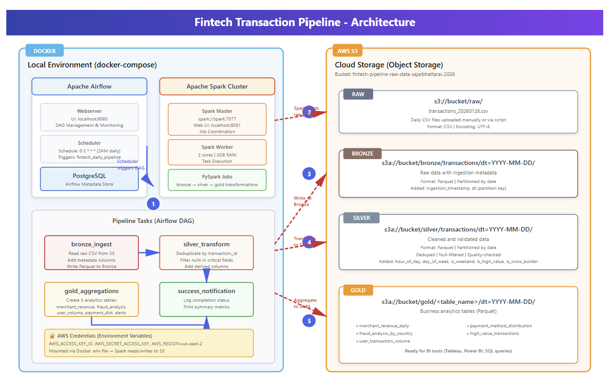
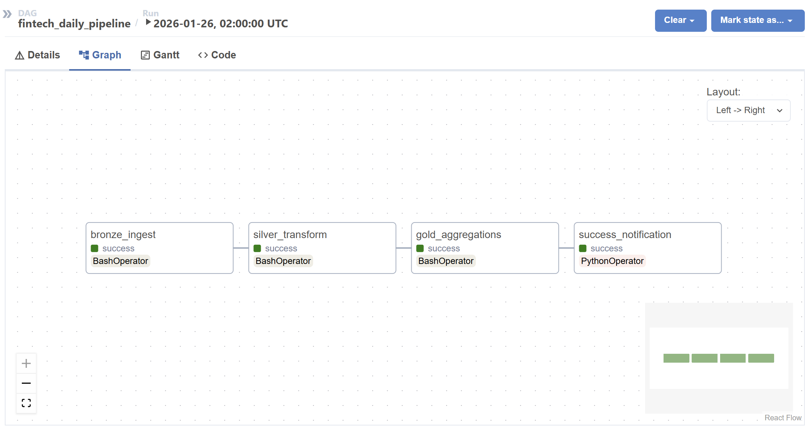
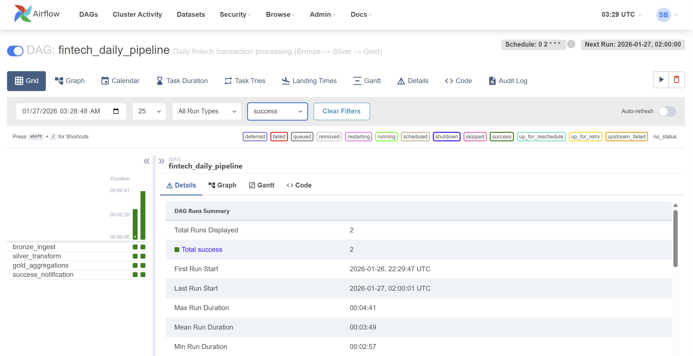

Fintech Transaction Pipeline
A production-style batch pipeline processing 50K daily fintech transactions through Bronze→Silver→Gold medallion architecture — Airflow orchestrating Spark jobs, writing Parquet to AWS S3, containerized with Docker Compose. Not a tutorial project. Two full DAG runs verified with real S3 output across all four bucket prefixes.
- Daily Transactions
- 50K
- Avg Run Duration
- 3:49
- Gold Analytics Tables
- 5
Problem
What This Was Built to Prove
Personal projects in data engineering usually fall into one of two failure modes: they're either toy pipelines that load a CSV into pandas, or they're theoretical architectures that were never actually run. I wanted something different — a project that demonstrates the same engineering decisions you'd make in production, run against real infrastructure, with verifiable output you can point to.
The fintech domain was chosen deliberately. Financial transaction data has specific quality requirements — deduplication on transaction IDs, null filtering on critical fields like amount and merchant, derived feature engineering for fraud detection signals — that make it a realistic test of a medallion pipeline rather than a data movement exercise. The goal was a pipeline that could be handed to another engineer and run without modification.
Architecture
System Design
Docker Compose running Airflow and a 2-node Spark cluster locally, writing to real AWS S3 storage via environment-injected credentials.

The local environment runs entirely inside Docker Compose: an Airflow webserver, scheduler,
and PostgreSQL metadata store on one side; a Spark master and worker (2 cores, 2GB RAM) on the other.
AWS credentials are injected as environment variables via a .env file — Spark reads
directly from and writes directly to S3 without touching local disk for data storage.
The Airflow scheduler triggers fintech_daily_pipeline on a 0 2 * * *
cron — 2AM daily. The DAG submits PySpark jobs to the Spark cluster via BashOperator,
sequencing the bronze, silver, and gold transformations with explicit task dependencies.
No data moves forward unless the upstream task completes successfully.
Orchestration
DAG Design & Verified Runs
4 tasks, linear dependency chain, 2 full production runs verified with real S3 output.


The DAG has four tasks in a strict linear chain. bronze_ingest reads the raw CSV
from s3://bucket/raw/, adds ingestion metadata columns, and writes Parquet
partitioned by date to the bronze prefix. silver_transform deduplicates on
transaction_id, filters nulls on critical fields, and adds derived feature
columns including hour_of_day, day_of_week, is_weekend,
is_high_value, and is_cross_border. gold_aggregations
creates 5 analytics tables. success_notification logs completion status and
prints summary metrics.
Both runs completed successfully — first run on 2026-01-26 at 22:29 UTC, second on 2026-01-27 at 02:00 UTC. Max duration 4 minutes 41 seconds, mean 3 minutes 49 seconds across both runs. The grid view above is the actual Airflow UI from those runs.
Medallion Layers
Bronze → Silver → Gold in S3
Each layer is a separate S3 prefix with its own schema contract and promotion criteria.

fintech-pipeline-raw-data-sajalbhattarai-2026 — all 4 layer prefixes confirmed after the second DAG runRaw · s3://bucket/raw/
Daily CSV files uploaded manually or via script. UTF-8 encoded, unmodified from source. Serves as the immutable audit record.
Bronze · s3://bucket/bronze/
Raw data with ingestion metadata added. Parquet format, partitioned by dt. Appended with ingestion_timestamp and partition key. Schema-validated at write.
Silver · s3://bucket/silver/
Cleaned and validated. Deduped on transaction_id, null-filtered on critical fields, type-cast, and enriched with derived feature columns for analytics.
Gold · s3://bucket/gold/
5 analytics tables: merchant_revenue_daily, fraud_analysis_by_country, user_transaction_volume, payment_method_distribution, high_value_transactions. BI-ready Parquet.
Feature Engineering
Fraud Detection Signals
Derived columns added at the Silver layer — these are what make the Gold analytics tables meaningful.
The silver transformation does more than clean — it engineers the features that power fraud detection analytics in Gold. Raw transaction data doesn't tell you much. But once you know that a transaction happened at 3am on a Sunday, was above the high-value threshold, and crossed an international border — you have signals worth aggregating.
hour_of_day
Extracted from transaction timestamp. Late-night transactions (22:00–05:00) correlate with elevated fraud rates in training data.
is_weekend
Boolean derived from day_of_week. Weekend transaction patterns differ from weekday baselines — a useful signal for anomaly detection.
is_high_value
Flags transactions above a configurable amount threshold. High-value transactions are routed to the high_value_transactions Gold table for elevated scrutiny.
is_cross_border
Derived from merchant country vs. user country. Cross-border transactions feed directly into the fraud_analysis_by_country Gold aggregate.
Results
What This Project Demonstrates
- Two full DAG runs executed and verified — real Airflow scheduler, real Spark cluster, real S3 writes. Not a notebook, not a simulation. The grid view screenshot is from the actual Airflow UI.
- All four S3 prefixes populated after the second run — raw/, bronze/, silver/, and gold/ each contain Parquet files partitioned by date, exactly as designed.
- Idempotent pipeline — re-running on the same date partition overwrites cleanly without creating duplicates in Bronze or Silver. A requirement, not an afterthought.
Tradeoffs
Honest Limitations
- Local Spark, not a real cluster
- The Spark cluster runs in Docker with 2 cores and 2GB RAM. This is enough to demonstrate the pipeline design and verify the transformation logic — but it's not representative of production-scale performance. A managed Spark cluster on Databricks or EMR would handle the data volumes and have autoscaling, execution history, and cost observability.
- No data quality checks
- Silver transformation includes null filtering and deduplication, but there are no explicit DQ gates — no row count expectations, no schema assertions between layers. In the KWI lakehouse platform, these run as first-class Airflow tasks that block promotion on failure. This pipeline would need those added before it could be considered production-ready for a real environment.
- Synthetic data, no schema evolution testing
- The transaction data is synthetically generated. A real fintech pipeline needs to handle schema drift from upstream payment processors — new fields, renamed columns, type changes. The Bronze layer's append-only design supports this, but the ingestion code doesn't currently handle schema evolution gracefully.
Stack
Technologies
Want to Look at the Code?
Happy to walk through the DAG structure, the Spark transformation logic, how the Docker Compose environment is wired together, or the S3 partition strategy.